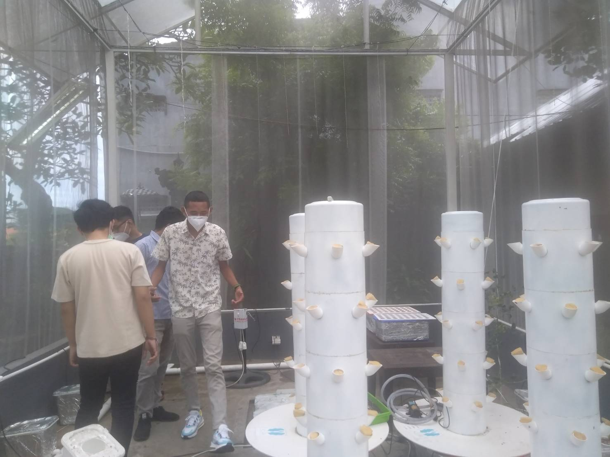

back to home

Perkembangan teknologi di era digital seperti sekarang ini bertumbuh semakin cepat dari hari ke hari,
dalam perkembangannya teknologi ini akan membantu pekerjaan manusia. Melalui platformnya yakni
Techno-researchpreneur University,Undiknas senantiasa selalu adaptif dan responsif terhadap modernisasi dan digitalisasi
pengembangan produk yang berdaya guna bagi masyarakat.
PRITA Laboratory dirancang dalam dua jenis Smart Farming 4.0 untuk kulturisasi tanaman buah dan tanaman sayur.
Sistem ini dibangun berbasis teknologi Hydroponic Bato Bucket Systems dan Aeroponic Verticulture yang keduanya diimplementasikan dalam kategori fragmented media beds.
Metode kulturasi fragmented media beds, khususnya Bato Bucket dan Aroponic Verticulture memiliki banyak keunggulan dalam hal kontrol penyakit, efesiensi dan kemudahan pemeliharaan.
Sistem ini merupakan sistem kulturisasi yang paling bergantung pada adanya teknologi kontrol dan otomatisasi agar dapat beroperasi secara optimal.